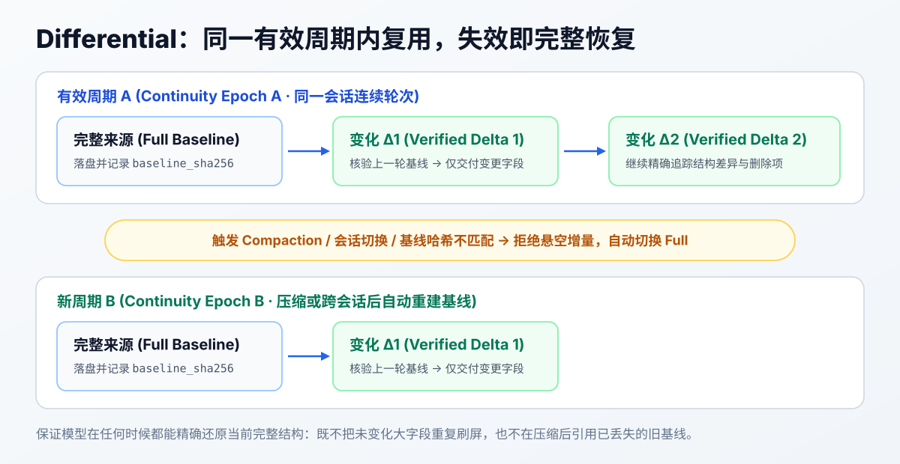
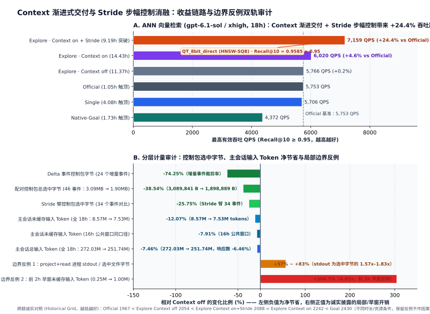
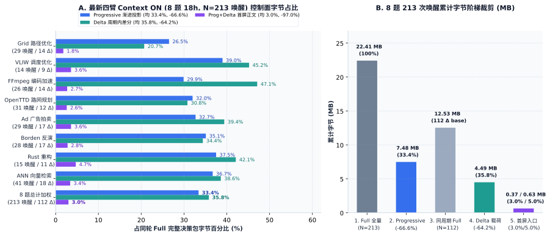

Agent 做长任务，资料会越来越多：原目标、后来追加的约束、试过的方案、失败的实验、当前做到哪里。每次继续都把整份材料再塞一遍，重复会不断累积；只留一段摘要，又可能找不回决定所依赖的原话。
LoopX 的 context delivery 把这件事拆开做：完整资料保存下来，当前决定需要的事实先读，支持材料沿问题展开；同一个有效 compaction 周期内，再精确复用没有变化的结构。
核心 Codex 原生路径已随 LoopX 2.2.0 发布。受支持的 POSIX Codex App／SSH 会话与新的 benchmark heartbeat 默认开启 context delivery；已有关闭设置继续生效，也可以显式关闭。开启后完整内容先保存，Agent 收到当前读取入口。具体发布与验证范围见 2.2.0 版本说明。
可以把它想成查一本厚书：capture 是完整保存的快照，像一本版本固定的书；目录告诉我们章节在哪，JSON Pointer 是书内地址。渐进式读取决定这一刻翻到多深；差分决定下一轮哪些内容可以沿用。
11 月 8 日这次修订，还接入了 2.2.0 之后合入的首读、阶段化范围读取、进程传输和数字精度修复，核对源码为 611019243e。对应章节描述的是这份源码，不代表所有安装都已升级。下文原有的教学测量与归档研究结果仍保留各自较早的版本和条件。
用“管家读语音”串起一次工作
假设要让管家理解语音消息，并在原对话返回结果。完整资料里保留了目标、服务约束、隐私要求、验收，以及很长的方案讨论。下面是教学示意，后文的示例程序会生成完整数据，可在隔离目录复现。
capture.json
├── goal
│ ├── objective：理解语音，并在原对话返回结果
│ ├── constraints
│ │ ├── provider：优先已有语音服务
│ │ └── privacy：音频不能公开，外部处理仍需已有授权
│ └── acceptance：转写正确、回到原对话、不可用时明确告知
├── providers
│ ├── configured
│ │ ├── formats
│ │ └── authorization
│ └── alternative
│ ├── formats
│ └── authorization
├── evidence：试验结果、输入格式、回传位置
└── history：80 条完整历史讨论
Agent 此时先要弄清接入边界。它必须同时知道“优先已有服务”和“外部处理仍需授权”；服务偏好本身并不授权发送音频。历史讨论仍然保存着，可以在比较方案、核对依据时继续读。
完整来源从已有 typed owner 装配，带着 Goal、完整任务、累计验收和来源修订。已标记的机器生成区域由 canonical 任务接续，其余原叙事、注释和停止条件完整保留，不能按标题猜哪些文字可以删。这个例子将当前接入边界完整放在 goal；来源另有必读要求时，仍按它的读取约定执行。
为了把机制讲具体，下面的数据来自这份合成材料上的实际 reader／编码器测量。它没有调用模型或语音服务。文末提供生成完整案例的程序和原测量记录。
知道位置，直接一次读齐
/goal/constraints 是 JSON Pointer：从 JSON 根进入 goal，再进入 constraints。它类似文件路径，但定位的是 JSON 内部的值。
文件名、Pointer 和摘要各管一件事：capture.json 找到完整文件，Pointer 找到里面的位置，SHA-256 确认是哪一版。数组的 /requirements/0 表示第 1 项；数组重排后，同一位置可能变成另一项，所以地址必须和捕获版本一起使用。
运行文末的示例程序后，$CAPTURE 指向输出目录的 capture.json，$SHA 取自同目录的 manifest.json。一次选择三个已知位置：
loopx --format json quota context-read \
--capture-file "$CAPTURE" --capture-sha256 "$SHA" \
--select /goal/objective \
--select /goal/constraints \
--select /goal/acceptance
一次拿到目标、完整约束和验收，就能同时看到服务偏好与隐私边界。多次 --select 合并的是读取请求；三个值仍分别带着自己的 Pointer，便于核对出处。
这份完整 capture 为 51,547 字节。在相同文件、每页 16,000 字节、CLI 输出上限 20,000 字节的设置下：
| 读取方式 | CLI 调用次数 | 返回正文 | CLI 完整返回 |
|---|---|---|---|
| 分页读完整 capture | 4 | 51,547 B | 55,607 B |
| 三个位置分别读取 | 3 | 804 B | 2,694 B |
| 三个位置一次批量读取 | 1 | 674 B | 1,362 B |
后两行取到的 Pointer／值完全相同，差别在重复请求和响应封装。第一行还读出了全部历史，信息范围更大。这里比较的是“当前先读三处事实”这一步；完整 capture 的生成、保存与首次引用是共同前置成本。
不知道结构，查相关目录，再往下读
如果 Agent 不知道服务记录里有哪些字段，可以只展开 /providers。--list 返回目录元数据：Pointer、类型、大小，以及对象或数组的成员数量。
loopx --format json quota context-read \
--capture-file "$CAPTURE" --capture-sha256 "$SHA" \
--select /providers --list --list-depth 2
--list-depth 2 一次看到服务项和它们下面的字段：
/providers/configured object
/providers/configured/formats array
/providers/configured/authorization string
/providers/alternative object
/providers/alternative/formats array
/providers/alternative/authorization string
随后可以批量读格式和授权状态。目录告诉 Agent 去哪里找；值要通过 --select 真正读到，才能支撑后续决定。
同一份目录，本例逐层列出 /providers 和它的两个服务子树，需要 3 次调用、2,784 字节 CLI 返回；两层一次展开，得到相同的一组字段地址，需要 1 次调用、1,283 字节返回。
知道地址就直接读，不知道才查相关目录。 小引用能放下时已经附有顶层目录，也不需要再从头查一遍。渐进式读取围绕当前问题展开，并不固定要求“先目录、再单字段、再下一层”的调用顺序。
要求先看见，证明它的材料再展开
“接入成功”不只意味着转写文本正确。这个任务还要求结果回到原对话。
示例里的两次记录是：
sample-1：转写正确，回到了原对话
sample-2：转写正确，却回复到了另一对话
验收时，如果只看“转写成功”的摘要，就可能放过第二个问题。LoopX 已实现的原生验收分层会保留完整要求和当前评审状态，让 Agent 先看到关键字段：
{
"description": "转写结果回到原对话，保留消息来源、顺序及原始音频引用。",
"status": "unverified",
"agent_review": {
"conclusion": "unmet",
"basis_current": false,
"independently_verified": false
}
}
要求没有通过、已有依据过期，这些事实先出现在决策层。为什么失败、哪些证据支持这个判断，再沿原文入口读深。Agent 自评与独立核验也保留为不同事实。
实际实现中的 supporting_material_pointer 给出原始 outcome 的位置。假设把这个返回前缀记为 $P，需要评审解释时，就沿它接上 /requirements/2/agent_review/note；需要证据引用时，接上 /requirements/2/agent_review/evidence_refs。前缀来自当前捕获，不能照抄另一份文件的数组序号。
本例将语音任务装配成现有 typed owner 支持的验收结构后，完整原始捕获是 57,014 字节，必要视图为 5,107 字节。10 条要求的原文全部保留，未通过、依据过期和独立核验标记仍在；原始 57,014 字节也完整保存。 支持历史与长解释有了可展开的地址。
关系导航还可以沿任务依赖、共享验收、来源和证据，建议先看哪些 outcome。关系不完整时扩大范围；其他路线的反证仍然可达。它帮助安排阅读顺序，最终哪些事实影响当前判断，仍需要 Agent 理解。
范围在影响决定之前读到
给语音任务接服务，还涉及一个时机问题：什么时候必须逐条检查允许写入的路径？11 月的源码允许在选择任务、准备普通认领时，把很长的 write_scope 列表换成原始捕获中的精确补读地址，停止条件和审批要求仍直接可见。如果选择语音适配器取决于能否修改它的文件，就必须先打开范围再选择。工作就绪的 ready 决定恢复完整当前范围，认领任务仍原子检查归属与范围。
这里改变的是读取细节的时机，既不授予权限，也不免除必需检查。回归样例用 220 条合成路径制造长列表；它是压力输入，不是 220 条产品规则。需要范围时，补读仍增加一次调用，ready 阶段的列表也仍然完整。范围读取改动与验证 · 核对的实现。
同一份交付里的相同记录，保留一个完整位置
同一个任务可能同时出现在“当前工作”和“队列摘要”里。完全相同的正文重复两遍，并没有增加事实。
原生必要视图可以保留一份完整任务，让另一处准确引用它：
{
"todo_id": "todo_voice",
"context_ref": "/agent_todo_summary/first_open_items/0"
}
这条引用指向同一份当前视图中的完整记录。本例将任务记录与引用各自单独序列化（含结尾换行），分别为 1,052 字节和 80 字节；完整约束仍在原位置，每个队列的成员和顺序也保留。
这是精确共享。标题相同、版本不同，或者 owner、证据、约束不同的记录，要继续分别保留。陌生字段和不支持的结构也保留原内容。这样的共享不依赖旧会话基线，和下一节跨轮次的差分是两件事。
下一轮继续，交付这次改变了什么
现在语音任务继续推进：新增了第三个样本，工作从“核验原对话返回”进入“核验修复后的返回”，评审依据也更新了。原目标和大部分要求没有变化。
这时可以做 compaction 周期内的结构化上下文差分。
在同一有效周期内，保存的完整基线经过核验，不变的文字、数组和对象可以精确复用；新增、修改、删除与数组重排则明确表示。对象换了位置时，也可以引用原子树，再叠加这次修改。还原后必须与完整当前来源一致。
同一周期
上一份：完整目标 + 全部要求 + 样本 1、2 + 旧工作状态
这一份：新增样本 3；更新工作状态与评审依据
还原后：仍是完整的当前上下文
同一合成任务、同一 scope 下，本例编码层得到：
| 情况 | 编码结果 | 大小或读回结果 |
|---|---|---|
| 当前视图完整编码 | full | 5,543 B |
| 有效周期内复用已核验基线 | delta | 2,164 B；完整还原逐值一致 |
| 切换 context epoch | full | 不沿用旧周期基线 |
| 差分内容损坏 | 恢复当前 full | 与完整当前视图逐值一致 |
| 很小的两字段输入发生变化 | full | 差分开销不合适，保留完整交付 |
这张表测的是编码结果。原生适配层还会比较文件引用、分页封装和读取指令等实际交付字节；完整交付更合适时使用 full。大小比较服务于交付效率，不能替代事实完整性。
开启后，默认交付的是一个读取入口
把前面的动作接回产品，当前支持的 Codex 原生 quota 路径是：
同一次捕获，从保存到读取
decision-<id>/
├─ projection.json 原始捕获
├─ required-context.json 必要视图
├─ delivery.json full/delta
└─ *.reader.json 读取引用
这里有一个很有用的设计：即使返回 mode: "delta"，Agent 也能从当前 recovery 直接选读事实。 它不必为了开始判断，先通读旧基线或重放全部差分。差分的 path 可以指向 delivery.json，而 recovery、select_command 指向当前完整视图；context_details 再把支持材料接回原始捕获。
原生导航还把完整 capture／selection 摘要保存在不可变的私有 reader 引用中。Agent 复制返回的引用读内容，CLI 仍在每页校验完整摘要、选择与游标；并没有把 SHA256 截短。first_read_command 是起始选读，不代表全部必读来源已经读完。
# 从当前返回的 recovery.reference_file 复制原 recovery 引用。
loopx --format json quota context-read \
--reference-file "$RECOVERY_READER_REFERENCE" \
--select "$POINTER_A" --select "$POINTER_B"
续页引用固定当前选择，沿它返回的 next_command 读至 EOF；更换 Pointer 时，回到原 recovery 引用。极小预算可能保留原显式文件／摘要接口。上面的教学测量也使用这个兼容接口，数字仍对应原实验条件。
首条响应要能完整送达
一条读取命令很短，不代表返回也小。语音任务的首读要同时交付当前决定、必读要求和继续读取的方法。如果工具截断了响应，Agent 可能连恢复缺失材料的方法一起丢掉。
所以 11 月的源码按完整 JSON 响应序列化后的 UTF-8 字节计算预算，包括转义、分页元数据和导航。--page-bytes 限制正文，--max-page-output-bytes 限制整条响应。没有显式输出预算时，生成的 linked 首读命令与附带首屏的原生 context-project --initial-read 使用 12,000 字节回退值；普通 bulk／恢复 reader 和保存的任务选择 recipe 保留原预算。
完整起始选择需要分页时，附带首屏的 reader 会尝试先交付一个独立完整的 opening，包含决定和读取义务。只有整条响应放得下才使用它；其余内容仍须沿 remaining_read_command 和后续游标读完。游标就是返回的字节偏移，用于接续同一组选读。opening 放不下时，继续使用同一捕获的普通分页；上下文存储缺失或不可写时，恢复也仍保留原捕获。
# 对当前返回的 reader 引用显式指定预算：
loopx --format json quota context-read \
--reference-file "$RECOVERY_READER_REFERENCE" \
--select "$POINTER_A" --select "$POINTER_B" \
--page-bytes 12000 --max-page-output-bytes 12000
两项上限可以同为 12,000，实际正文却更短，因为封装也占空间。这个值是工具边界未知时的回退值，不是普适最优值，也不保证宿主在后续模型输入里仍保留这些字节。更小的页面可能增加调用和重复封装。发生截断后，要对同一捕获的受影响区间用合适的显式预算恢复，不能重新准入任务或重做外部工作。首读改动与验证 · 核对的 reader。
文件保存了什么，模型读到了什么
差分编码要回答的是：用已核验的旧文件，能否准确还原当前文件？ 原生 captured_file 路径核验完整保存的基线、版本和 scope，不以模型先通读旧文件、某组选读的 EOF 或一次 ACK 作为前提。每份基线本身是完整版本，也不要求模型先追完一串差分。
渐进式读取回答另一个问题：这次决定需要哪些事实？ 仍以语音示意为例，下一轮只新增了样本 3，隐私约束没有变化。用一个遗漏读取的反例检验：假设 Agent 漏读了必需的隐私约束，或压缩后已经无法确认它。准备外发音频前，仍须从当前恢复入口补读 /goal/constraints，并遵守原有授权边界。它可以直接读这处事实，无须先通读旧基线。文件已保存、字段未变化，都不能代替这次必要读取。
往返几次，正文搬了几遍
有些交付开销发生在模型看到内容之前：Python CLI 请求 TypeScript owner 生成视图，再收回响应。这样一次进程之间的请求和返回，就是一次内部 RPC 往返；一条 CLI 命令可能包含多次往返。
对已经核验的保存捕获，11 月的源码可以在开启渐进交付、关闭周期差分时直接返回首组选读。选择本身已经指出要读哪些事实，事先再生成一次根目录会多一次往返。审阅、写回说明和恢复仍指向同一份原始决定。
#8298 的作者用固定合成 SQLite 输入，记录了首组选读、审阅和写回契约读取这段序列。报告版本为 775394bd8d，已集成 94b91e48aa：
| 计量层 | 改动前 | 改动后 |
|---|---|---|
| CLI 调用 | 4 | 3 |
| 内部 RPC | 5 | 4 |
| RPC 传输 | 326,204 B | 271,741 B |
| 首读所选正文 | 8,046 B | 8,046 B |
| CLI 完整 stdout | 32,846 B | 33,060 B |
少一次命令，没有让每一层都变小：所选正文没变，导航反而使 stdout 略增。这些是作者的进程测量，不是这次文章源码上的新性能复验，也不是模型 Token 结果。
另一处重复发生在一条响应内部：原生 full 交付曾把同一投影正文同时放进 typed edits 和 delivery.context。现在生产端只跨 Effect bridge 发送一份，再由 Python adapter 还原普通 full 结构；delta 保留自己的编辑。#8285 的作者记录中，受影响的 SQLite 响应从 53,999 降到 38,225 B；包含 guard、原生 hook、一次错误摘要拒绝和同捕获重试的序列，从 1,021,975 降到 1,006,203 B。各阶段输出及调用数一致。生产端 · adapter。
这两处改动都在保留任务要求的前提下减少重复搬运。它们对完整任务的价值，仍要连同补读、恢复、实际模型输入与缓存、输出、耗时和验收成果一起判断，不能用内部传输字节替代这些成本。
压缩或读取失败，恢复上下文，也保留原工作
宿主发生 compaction，后续新工作轮次建立新的完整基线。原目标、要求和来源仍然存在，必要事实可以重新读到。
如果压缩、缺页或输出截断发生在尚未结束的 Turn 内，就沿原捕获补回缺失事实，保留原任务、执行和结算身份。假设语音结果已经发送，只是回执没有读到，恢复上下文不能变成再发一次结果。
读取本身也有明确的失败边界：
- 来源变了，摘要没变： 拒绝这次读取，先核对版本。
- 路径不存在： 整个批次拒绝；先从已知父节点查目录。存在但值为
null，则正常返回null。 - 长内容跨页： 按
next_command接读，保留捕获摘要、选择摘要和字节游标，按连续偏移组合正文。某组选读的 EOF 只覆盖该选择。 - 遇到未知结构或不适用的来源： 保留完整内容及原有读取义务，不猜哪些文字可以隐藏。
视图变短，原值也要保真
文件完整，不保证投影里的每个值都完整跨过了语言边界。11 月复现的一条阶段化读取，把整数 9007199254740993 变成了 9007199254740992；两份不同的验收记录还可能因此看起来相同，被放到一个引用下面。原始捕获没有变，返回的事实却已经错了。
保存的原生路径现在对普通决定跳过无须执行的 replan 投影，确需重规划时，将呈现编辑应用于原始来源值。阶段化 replan reader 同样恢复原数字，保留整数、整数值浮点数和负零。不同记录得到不同引用；历史引用若有歧义，明确拒绝并指回审阅，无歧义的仍能解析。显式分页窗口也沿现有校验进入保存 reader。这些是 #8319、#8324 合入的正确性与恢复修复，有合成输入的公开 CLI 回归支撑；它们不证明模型理解或整题成本收益。
连续性与恢复

同一有效周期：完整基线 → 新事实与差分 → 完整还原。
新周期或已知连续性丢失：当前完整来源 → 必要事实重新读取。
这些数据说明了什么
这组例子把三个收益来源分开了：少重复搬当前用不上的历史，少发本可合并的读取请求，少重复交付已经核验的不变结构。 完整来源、要求与恢复路径贯穿其中。
上面的 reader 数字包含实际 CLI 响应中的分页元数据；本机路径长度会影响少量封装字节。原生投影数字比较捕获正文，周期表比较编码层，三种口径分别列出。示例脚本可复算这些值与完整还原结果。
放回真实长程任务，还要把必要补读、恢复、缓存命中、模型输入输出、工具调用、等待与人工介入一起算进去；效果则看是否漏掉约束、做错决定，最后交付了什么。前面的语音合成例子测清了机械路径，下面补入真实 18 小时长程任务上的多题与分层消融观察。
真实模型与多题消融实证：收益链路与边界反例
在 EdgeBench ANN 向量检索优化（gpt-6.1-sol / xhigh，18h，约束 Recall@10 ≥ 0.95）与跨题消融中，我们将 Context Delivery（渐进读取与周期差分）与 Stride（基于证据差分的步长控制）拆开对照，同时统计控制包选中字节、主会话模型输入 Token 与局部/早窗反例（基于 @shangzh0 归档轨迹与控制面回执复算）：
多题消融与分层计量审计

Recall@10 ≥ 0.95）。下图（B）：相对 Context off 的分层字节与主会话输入 Token 节省（左，负值）及诚实披露的局部/早窗开销与跨题反例（右，正值）。点击查看原图。| 观测维度或实验臂 | 对照数值 | 口径与解释 |
|---|---|---|
| ANN 18h：Official / Single / Native-Goal | 5,753 / 5,706 / 4,372 QPS | Official 在 1.05h 触顶后进入长平台期 |
| ANN 18h：Explore · Context off | 5,766 QPS（+0.2%） | 11.37h 触顶；输入成本在下方单列统计 |
| ANN 18h：Explore · Context on | 6,020 QPS（+4.6%） | 14.43h 触顶；该次运行的后程峰值不能单独隔离原因 |
| ANN 18h：Explore · Context on + Stride | 7,159 QPS（+24.4%） | 9.19h 突破（QT_8bit_direct HNSW-SQ8，Recall@10 = 0.9585） |
| 控制包字节：24 个 Delta 事件 / 46 个配对事件 | −74.25% / −38.54% | 配对总选中字节由 3,089,841 B 降至 1,898,889 B（Stride 臂 34 事件为 −25.75%） |
| 主会话输入 Token：全 18h 未缓存 / 总输入 | −12.07% / −7.46% | 未缓存输入 8.57M → 7.53M（16h 公共窗口为 −7.91%）；总输入 272.03M → 251.74M |
边界反例 1：project+read 进程 stdout |
+57% ~ +83%（1.57×–1.83×） | CLI JSON 封装与分页导航使进程 stdout 高于被选中的原始文件字节 |
| 边界反例 2：前 2h 早窗未缓存输入 Token | +304.7%（0.25M → 1.00M） | 建立基线与分步选读增加前置工作；这个早窗不能保证后续摊薄 |
| 边界反例 3：跨题 Historical Grid（越低越好） | Official 1967 < Off 2054 < On+Stride 2088 < On 2242 | 不同时长与资源条件下的历史跨题反例；保留负向观察，不作跨题因果外推 |
这组双轨实证说明：控制包裁剪率（−74.25% / −38.54%）不能直接等同于整轮模型 Token 节省（未缓存 −12.07%、总输入 −7.46%），更不能掩盖前 2 小时早窗的前置建索引开销（4.05×）和跨题反例。 报告中的 ANN 运行同时出现了较低输入总量和后程有效实验，值得据此继续检验上下文交付能否支撑长程研究。但这些观察本身不能将成果归因于省下的注意力、拆清它与 Stride 的全部交互，也不能证明换一题仍有收益。上文 11 月的源码修复并不是这些归档运行的实验干预。原研究条件见 EdgeBench 后程突破与五臂归因。
2.2.0 已交付完整来源、文件入口、批量选择、目录深度、适用验收分层、精确共享、周期差分与恢复。更广的候选、偏好、Explore 按决策阶段统一交付及全入口一致性仍有未完成部分。在「设置 → 本机 → 能力 → 差分上下文 → Codex」可以关闭，已有 off 会保留；单次命令或新 benchmark trial 可用 --context-delivery off。Trial 不继承本机开关，已有冻结 trial 不被重写。默认策略下，普通 CLI、不支持的宿主和非 heartbeat benchmark 保留原完整路径；显式请求不支持的 on 会明确拒绝，hooks 不可用时使用完整交付。保存配置、实际安装与模型采用分别核验。
八题四臂 Context ON：按唤醒组比较上下文字节
本节复算已公开的八题四臂 Context ON 18h 聚合表，以区分 Progressive 与周期内 Delta 的传输开销。原表报告 213 次模型侧唤醒：101 次新会话或压缩后的基线读取，以及 112 次周期内续跑。逐题单元格保留来源原值，合计按表重算；这里不附原始逐 wake 日志。
八题四臂 Context ON 控制面字节比例（N = 213 唤醒，112 周期内 Delta）

| 题目（四臂 Context ON 18h） | 唤醒数（基线 / Δ） | Full 全量包 | Progressive 必要视图（占比） | 同周期 Delta 载荷（占同轮 Full） | Prog+Delta 首屏（正文 / 含封装） |
|---|---|---|---|---|---|
Grid 路径优化（on_stride） |
29（15 / 14） | 4,405,651 B | 1,166,467 B（26.5%, −73.5%） | 474,016 B（20.7%, −79.3%） | 41,878 / 76,650 B（1.8% / 3.3%） |
VLIW 调度优化（on_stride） |
14（5 / 9） | 1,297,500 B | 505,826 B（39.0%, −61.0%） | 382,664 B（45.2%, −54.8%） | 30,860 / 50,152 B（3.6% / 5.9%） |
FFmpeg 编码加速（on_stride） |
26（12 / 14） | 2,924,522 B | 874,104 B（29.9%, −70.1%） | 759,787 B（47.1%, −52.9%） | 43,807 / 75,305 B（2.7% / 4.7%） |
OpenTTD 路网规划（on_stride） |
31（19 / 12） | 3,288,042 B | 1,050,623 B（32.0%, −68.0%） | 436,053 B（30.8%, −69.2%） | 36,753 / 64,619 B（2.6% / 4.6%） |
Ad Placement 广告拍卖（on_stride） |
29（12 / 17） | 3,115,820 B | 1,019,704 B（32.7%, −67.3%） | 708,828 B（39.4%, −60.6%） | 64,174 / 102,437 B（3.6% / 5.7%） |
Borden 震源反演（on_stride） |
28（11 / 17） | 2,855,664 B | 1,001,254 B（35.1%, −64.9%） | 625,709 B（34.4%, −65.6%） | 50,602 / 90,024 B（2.8% / 4.9%） |
Rust 工作区重构（on_stride） |
15（4 / 11） | 1,173,832 B | 439,814 B（37.5%, −62.5%） | 363,310 B（42.1%, −57.9%） | 40,956 / 64,251 B（4.7% / 7.4%） |
ANN 向量检索（on_stride） |
41（23 / 18） | 3,347,659 B | 1,228,159 B（36.7%, −63.3%） | 737,968 B（38.6%, −61.4%） | 65,419 / 107,112 B（3.4% / 5.6%） |
| 8 题合计（加权总体） | 213（101 / 112） | 22,408,690 B（100%） | 7,285,951 B（32.5%, −67.5%） | 4,488,335 B（35.8%, −64.2%） | 374,449 / 630,550 B（3.0% / 5.0%） |
可以看到两层正交且稳定的字节压缩效应：（1）Progressive 渐进式投影（required-context.json）在全部 213 次唤醒上将完整决策包从 22.41 MB 压至 7.29 MB（均值 32.5%，净减 −67.5%，各题稳定在 26.5%–39.0%），折叠掉未选中候选与历史长尾详情；（2）Delta 周期内差分（delivery.json）在 112 次同周期续跑唤醒上，将对应的 12.53 MB 全量包压至 4.49 MB（均值 35.8%，净减 −64.2%，各题 20.7%–47.1%）；（3）两者叠加的 --initial-read 首屏入口仅占原包的 3.0%（含 CLI JSON 封装为 5.0%，即净减 −97.0% / −95.0%）。
2.2.0 已交付完整来源、文件入口、批量选择、目录深度、适用验收分层、精确共享、周期差分与恢复。更广的候选、偏好、Explore 按决策阶段统一交付及全入口一致性仍有未完成部分。在「设置 → 本机 → 能力 → 差分上下文 → Codex」可以关闭，已有 off 会保留；单次命令或新 benchmark trial 可用 --context-delivery off。Trial 不继承本机开关，已有冻结 trial 不被重写。默认策略下，普通 CLI、不支持的宿主和非 heartbeat benchmark 保留原完整路径；显式请求不支持的 on 会明确拒绝，hooks 不可用时使用完整交付。保存配置、实际安装与模型采用分别核验。
口径与来源：上表逐题数据复算自已公开的八题表，Progressive 合计为 7,285,951 B / 22,408,690 B = 32.5%，覆盖全部 213 次唤醒。Delta 与首屏的 35.8%、3.0% / 5.0% 仅对应 112 次周期内唤醒；其 Full 分母原文仅报告约 12.53 MB，不能与 213 次总量混用。这里没有新增实验，也未独立核对逐 wake 原始记录。公开聚合数据与来源。
实现状态：#8266 仍是开放的 C1 提案；#8304 的最终合入范围是保留精度的排序与摘要复用。上述字节数据不归因为统一 Controller/Worker 已上线的收益。
用同一份材料动手读一遍
example.py 完整生成这个合成语音任务，调用现有 reader、渐进投影与差分 owner，逐项核对选择值、目录地址、全部 10 条要求、共享引用与完整恢复。程序不注册 Goal，不做准入或结算，也不调用模型或语音服务。
先准备原测量的源码 a4a0fad889d91cba0d945ce658788bdb76ba351e 及其兼容依赖，在该 checkout 根目录运行。将下载的程序路径填入下方；输出目录必须为空。
uv run --extra test python /path/to/example.py \
--loopx-root "$PWD" --output .local/context-delivery-example
生成的 capture.json 保留全部 80 条历史；projection.json、required-context.json 对应完整／必要视图；cycle-base.json、cycle-delta.json 对应周期编码；manifest.json 固定文件与摘要。生产中使用当前返回的真实路径，不能照抄教学树或另一份捕获的数组位置。
原测量记录固定本文数据。程序在其他源码上可以检查机制，但新结果不能改写原观察；页面封装字节还受本机路径长度影响。无需启动一次新研究来理解这个例子。
来源：完整交付契约 · 渐进投影 · 选择与目录 · 差分与恢复。例子运行源为 a4a0fad；原测量的三项核心 owner 与 0e78a19 逐字一致；上面的实现链接固定到发布版 v2.2.0，不把旧数字改记为发版后的重测。原生最终交付还会核算引用和后续读取，不能由编码层数字替代。